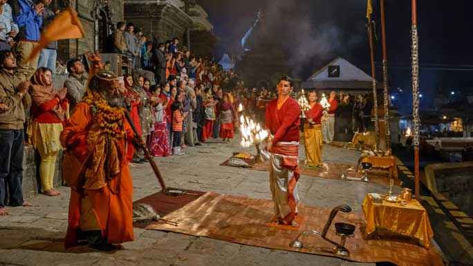
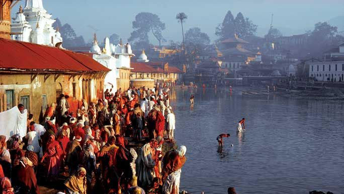
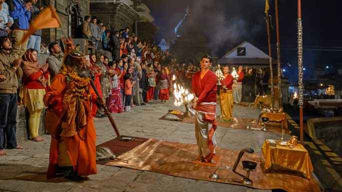
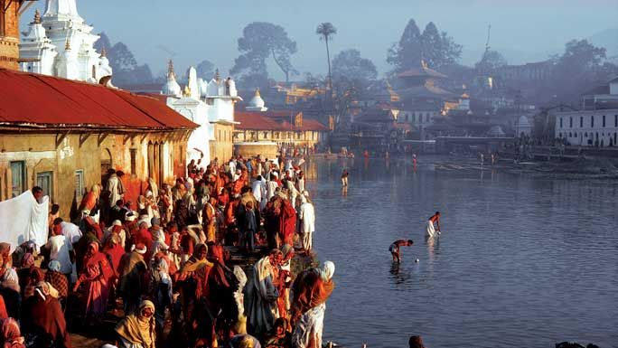

PASHUPATINATH
Visit the holy Pashupatinath Temple this Maha Shivaratrifor an out-of-this-world experience.
Dedicated to Lord Shiva, Pashupatinath is one of the four most important religious sites in Asia for devotees of Shiva. Built in the 5th century and later renovated by Malla kings, the site itself is said to have existed from the beginning of the millennium when a Shiva lingam was discovered here.The largest temple complex in Nepal, it stretches on both sides of the Bagmati River which is considered holy by Hindus. The main pagoda style temple has a gilded roof, four sides covered in silver, and wood carvings of the finest quality. Temples dedicated to several other Hindu and Buddhist deities surround the temple of Pashupatinath.
 Nearby is the temple of Guheshwori dedicated to Shiva's consort Sati Devi. Cremation of Hindus take place on raised platforms along the river. Only Hindus are allowed inside the gates of the main temple. The inner sanctum has a Shiva lingam and outside sits the largest statue of Nandi the bull, the vehicle of Shiva. There are hundreds of Shiva lingam within the compound. The big Maha Shivaratri festival in spring attracts hundreds of thousands of devotees from within Nepal and from India.Experience this highly recommended religious hub for a mix of religious, cultural and spiritual experiences. Located 3 km northwest of Kathmandu on the banks of the Bagmati River, the temple area also includes Deupatan, Jaya Bageshori, Gaurighat (Holy Bath), Kutumbahal, Gaushala, Pingalasthan and Sleshmantak forest. There are around 492 temples, 15 Shivalayas (shrines of Lord Shiva) and 12 Jyotirlinga (phallic shrines) to explore.
 Pashupatinath Temple is one of the 8 UNESCO Cultural Heritage Sites of the Kathmandu Valley. It is also a cremation site where the last rites of Hindus are performed. The site and events at cremation is not for the faint hearted; still visitors are seen watching curiously from across the river from the hill. Visit Pashupatinath Temple for an out-of-this-world experience.
Daily Rituals at Pashupatinath
Temple
Pashupatinath is also one of the very few living cultural heritage sites in the world. Unlike other cultural sites or museums, Pashupatinath is centre of energy with active participation of people all times of the day, every day. The daily rituals of Pashupatinath Temple are as follows:
4:00 am: West gate opens for visitors.
8:30 am: After arrival of Pujaris, the idols of the Lord are bathed and cleaned, clothes and jewelry are changed for the day.
9:30 am: Baal Bhog or breakfast is offered to the Lord.
10:00 am: Then people who want to do Puja are welcomed to do so. It is also called Farmayishi Puja, whereby people tell the Pujari to carry out a special Puja for their specified reasons. The Puja continues till 1:45 pm in the afternoon.
1:50 pm: Lunch is offered to the Lord in the main Pashupati Temple.
2:00 pm: Morning prayers end.
5:15 pm: The evening Aarati at the main Pashupati Temple begins.
6:00 pm onward: Recently the Bagmati Ganga Aarati; done by the shores of Bagmati, has been gaining lots of popularity. We can see the shores of Bagmati crowded mostly on Saturdays, Mondays and on special occasions. Ganga Aarati along with Shiva’s Tandava Bhajan, written by Ravana, is carried out on evening Ganga Aarati.
7:00 pm: Door is closed.
 Nearby is the temple of Guheshwori dedicated to Shiva's consort Sati Devi. Cremation of Hindus take place on raised platforms along the river. Only Hindus are allowed inside the gates of the main temple. The inner sanctum has a Shiva lingam and outside sits the largest statue of Nandi the bull, the vehicle of Shiva. There are hundreds of Shiva lingam within the compound. The big Maha Shivaratri festival in spring attracts hundreds of thousands of devotees from within Nepal and from India.Experience this highly recommended religious hub for a mix of religious, cultural and spiritual experiences. Located 3 km northwest of Kathmandu on the banks of the Bagmati River, the temple area also includes Deupatan, Jaya Bageshori, Gaurighat (Holy Bath), Kutumbahal, Gaushala, Pingalasthan and Sleshmantak forest. There are around 492 temples, 15 Shivalayas (shrines of Lord Shiva) and 12 Jyotirlinga (phallic shrines) to explore.
 Pashupatinath Temple is one of the 8 UNESCO Cultural Heritage Sites of the Kathmandu Valley. It is also a cremation site where the last rites of Hindus are performed. The site and events at cremation is not for the faint hearted; still visitors are seen watching curiously from across the river from the hill. Visit Pashupatinath Temple for an out-of-this-world experience.
Daily Rituals at Pashupatinath
Temple
Pashupatinath is also one of the very few living cultural heritage sites in the world. Unlike other cultural sites or museums, Pashupatinath is centre of energy with active participation of people all times of the day, every day. The daily rituals of Pashupatinath Temple are as follows: